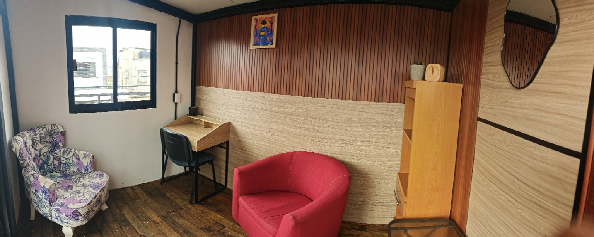
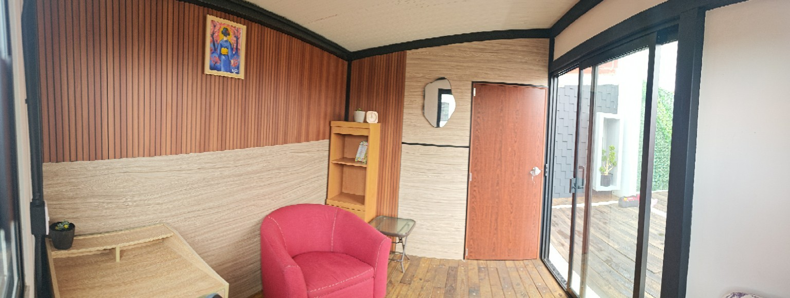

Recorrido breve
Unos segundos para entender cómo se siente Origen y su relación con el Deck.
El espacio más pequeño de Canvas. Íntimo, independiente y pensado para esos primeros pasos: trabajar, conversar, reunirse o darle forma a una idea.
Canvas Origen está pensado para una o pocas personas que necesitan concentración, privacidad y un lugar propio para comenzar.
Es una alternativa sencilla para trabajar, conversar, recibir una sesión o darle estructura a una idea sin tener que rentar un espacio grande.

Origen reúne un escritorio, una zona de conversación y luz natural en un espacio íntimo conectado visualmente con el Deck.

Unos segundos para entender cómo se siente Origen y su relación con el Deck.
Origen está pensado para esos primeros pasos. Reserva únicamente el tiempo que necesitas y vuelve cuando tu proyecto pida otro momento de trabajo.
Cuéntanos qué estás construyendo, cuántas personas usarían el espacio y qué horario tienes en mente.